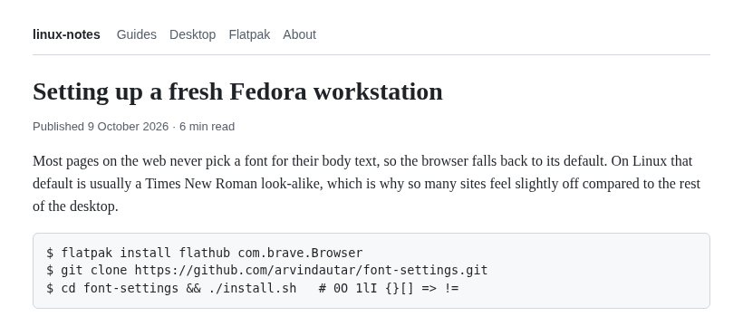
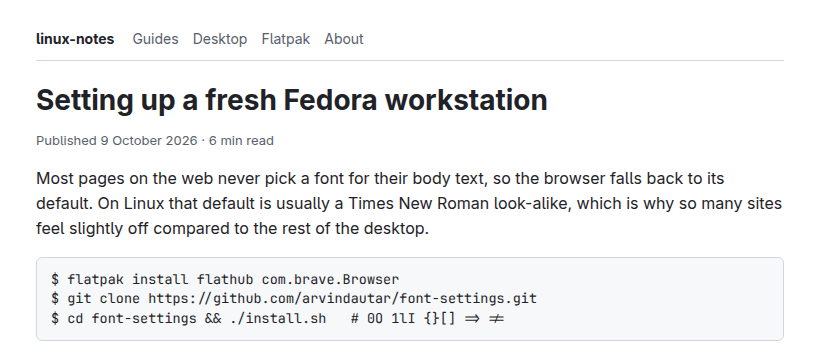

Sharp, consistent fonts on Linux
One script that gives GNOME apps, Flatpak apps and the Brave browser the same fonts and the same crisp rendering. It's applied again at every login, so a settings reset or a fresh Brave install never undoes it.


The same page in Brave (Flatpak) on Fedora. Real screenshots, nothing edited.
Fixes problems like
- ✕ Fonts look blurry or thin in Flatpak apps (Firefox, Brave, Chromium)
- ✕ Flatpak apps ignore
~/.config/fontconfig/fonts.conf - ✕ Brave shows websites in Times New Roman, Liberation Sans or DejaVu instead of your system font
- ✕ Brave ignores fontconfig aliases and substitutions
- ✕ Fonts look different in GNOME apps than in your browser
What you get
One font family everywhere
Adwaita Sans for text, JetBrains Mono for code, Noto Serif for serif. Same in GNOME, Flatpaks and on the web.
Crisp rendering
Antialiasing, light hinting and RGB subpixel rendering, matched across GTK, Qt, Chromium and Firefox.
Flatpak aware
Lets sandboxed apps read your font config, read-only. No more DejaVu fallbacks.
Self-healing
A small systemd user service applies the settings again at every login. One command to uninstall.
Install
Close Brave first, then run:
git clone https://github.com/arvindautar/font-settings.git ~/font-settings cd ~/font-settings ./install.sh
Log out and back in. To change a font or the text size, edit settings.env and run ./install.sh again. To remove everything, run ./uninstall.sh.
Works on GNOME with systemd: Fedora Workstation, Bluefin, Silverblue and similar. Brave can be the Flatpak or the regular install.